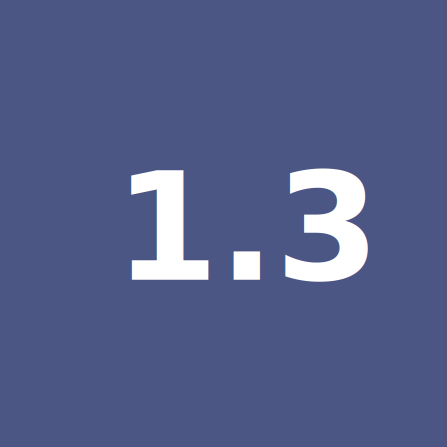

 P1.3a Équipe - Couleurs
Générez la palette selon les variables de couleur Bootstrap
Regénérez vous une palette de couleur: HueMint
Cliquez sur la 3e pastille ronde en entête et y ajouter le code hexadécimal de votre couleur principale. Ensuite cliquez sur lock. Ensuite générez jusqu'à obtention d'un résultat qui vous inspire.
Descendez en bas de la page et copier le code SCSS.
Créez votre SCSS pour ré-écrire la valeur de couleurs des variables Bootstrap.
Ajoutetz le dossiers vendors/ à votre fichier .gitignore
Si les dossiers sont disparus car git efface les dossier vides, recréez à la racine de votre projet, un dossier vendors et un dossier scss.
Téléchargez les fichiers source de Bootstrap pour avoir accès aux fichiers SASS : Fichiers sources Bootstrap.
Veuillez le télécharger directement dans le dossier vendors de votre projet. Le dézipper.
Installer l’extension de VS Code nommée Live SASS Compiler de l’auteur "Glenn Marks"
Cliquez sur Watch Sass dans le bas de votre fenêtre pour déparer le compilateur de Live Sass Compiler
Créez-vous un fichier custom_bootstrap.scss dans le dossier scss. Dans ce fichier, vous allez importer le fichier scss/bootstrap.scss qui se trouve dans le dossier bootstrap que vous avez téléchargé précédemment.
Avant la ligne d'importation, vous pouvez ré-écrire les variables Bootstrap comme bon vous semble. (Vous pouvez copier le SCSS que vous aviez généré dans HueMint). Par contre, veuillez l'écrire dans les deux formats comme montré ci-après les requis.
Dans vos 3 fichiers HTML, vous allez changer le lien vers le CSS de Bootstrap que vous aviez préalablement créé via le CDN et vous allez maintenant pointer vers le fichier scss/custom_bootstrap.css nouvellement généré. Le JS lui demeure inchangé.
dans ce format:
$light: #bfe5df;
$dark: #201d40;
$primary: #f36b62;
$secondary: #5f5f71;
$info: #20b4a8;
$success : #63af0e;
$warning : #ffc377;
$danger : #f60568;
et dans ce format:
$theme-colors: (
"light": #bfe5df,
"dark": #201d40,
"primary": #f36b62,
"secondary": #5f5f71,
"info": #20b4a8,
"success": #63af0e,
"warning": #ffc377,
"danger": #f60568,
);
Notes de cours 📚